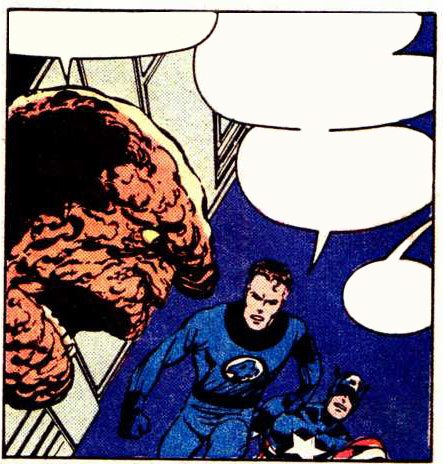
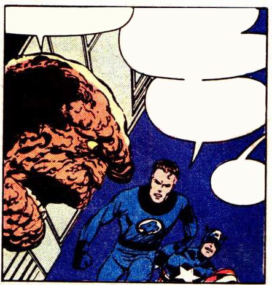

Just below ...
I don't like the looks of this. Terrax said Galactus was weak,
But He's holding his own against Thor and Ironman together!
I ain't so sure of that, Torchie. Is it my

Just below ...
I don't like the looks of this. Terrax said Galactus was weak,
But He's holding his own against Thor and Ironman together!
I ain't so sure of that, Torchie. Is it my imagination...
Or does Galactus look … smaller?
It's not imagination, Ben. Galactus is
using his energy reserves faster than his
body can replenish them.
He's actually dwindling
in size
But I fear his power may still
prove too much, he
may yet emerge. The
Victor in this
conflict.
Perhaps
not, my
friend